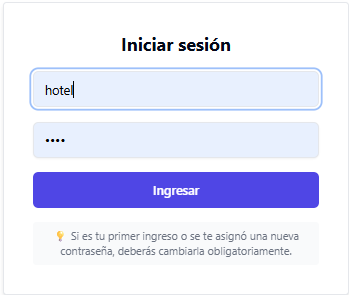
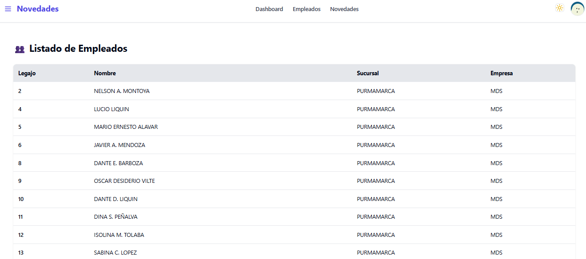
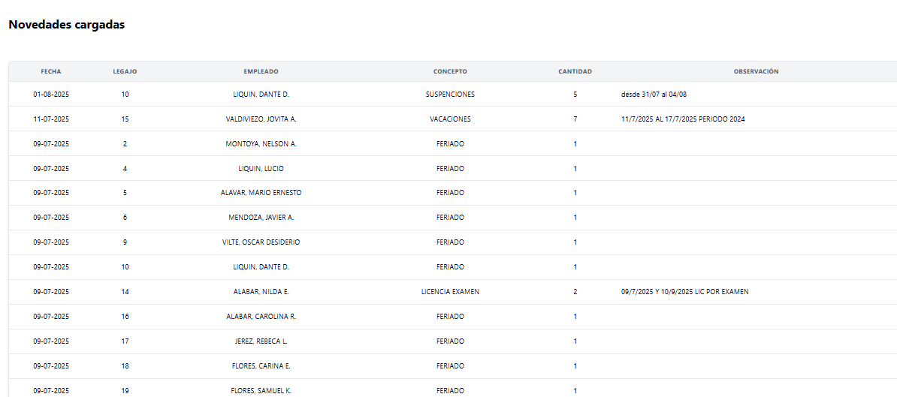
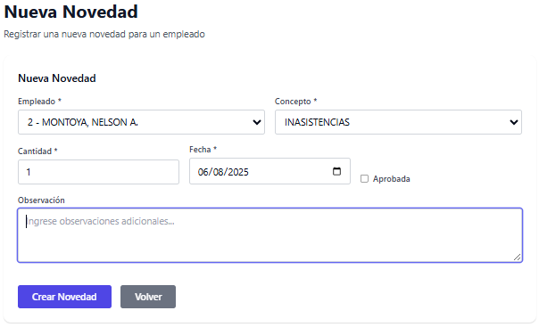

NT
Novedades Tango
Manual de Usuario para Operadores
📋 Información del Manual
Versión: 1.0
Dirigido a: Usuarios con rol de Operador
Fecha: Septiembre 2025
Funciones principales: Registro de novedades
1. 🚀 Introducción
Novedades Tango es una aplicación web diseñada para la gestión de novedades laborales,
especialmente optimizada para usuarios operadores que necesitan registrar información de manera rápida y
eficiente.
🎯 Objetivo del Manual
Este manual te guiará paso a paso para utilizar eficientemente las funciones de operador, permitiéndote:
- Acceder al sistema de forma segura
- Visualizar el listado de empleados como referencia
- Registrar nuevas novedades laborales
- Navegar de manera intuitiva por la aplicación
👤 Perfil de Usuario Operador
📊 Funciones disponibles:
- ✅ Visualizar listado de empleados (solo informativo)
- ✅ Consultar novedades existentes
- ✅ Registrar novedades nuevas
- ❌ Modificar datos de empleados
- ❌ Modificar novedades existentes
- ❌ Eliminar novedades
🔒 Seguridad y Acceso
El sistema utiliza autenticación por token para garantizar la seguridad.
⏰ Tiempo de Sesión: La sesión se mantiene activa por 2 horas sin actividad. Después de este
tiempo, el sistema te desconectará automáticamente por seguridad.
2. 🔐 Acceso al Sistema
🌐 URL de Acceso
Para acceder al sistema, dirigete a la siguiente dirección:
http://grupomanzur.ddns.net:3000/
Paso 1: Pantalla de Login
1. Accede a la URL del sistema
2. Verás una pantalla de inicio de sesión con dos campos:
- Usuario: Tu nombre de usuario asignado
- Contraseña: Tu clave de acceso

Pantalla de inicio de sesión del sistema
Paso 2: Primer Ingreso - Cambio Obligatorio de Clave
🔑 Cambio de Contraseña Obligatorio
En tu primer inicio de sesión, el sistema te solicitará cambiar tu contraseña por una nueva de tu
elección:
- Ingresa tu contraseña actual (proporcionada por el administrador)
- Crea una nueva contraseña segura
- Confirma la nueva contraseña
- Haz clic en "Cambiar Contraseña"
Paso 3: Ingreso de Credenciales
1. Ingresa tu usuario en el primer campo
2. Ingresa tu contraseña en el segundo campo
3. Haz clic en el botón "Ingresar"
⚠️ Errores Comunes:
- "Usuario o clave incorrectos": Verifica que hayas ingresado correctamente tus
credenciales
- "No se puede conectar con el servidor": Contacta al administrador del sistema
- "Sesión expirada": Han pasado más de 2 horas, vuelve a iniciar sesión
Paso 4: Acceso Exitoso
Una vez que ingreses correctamente, serás redirigido automáticamente al menú principal de la aplicación.
3. 👥 Visualización de Empleados
La sección de empleados te permite visualizar información de todos los empleados registrados en el sistema
únicamente con fines informativos. Esta sección te ayudará a identificar correctamente a
los empleados al momento de registrar novedades.
🚀 Acceso a la Sección
1. Desde el menú principal, haz clic en "Empleados"
2. Se cargará automáticamente el listado completo

Vista del listado completo de empleados (solo informativo)
📋 Información Mostrada
La tabla de empleados incluye las siguientes columnas para tu consulta:
| Campo |
Descripción |
| Legajo |
Número único de identificación del empleado |
| Nombre |
Nombre completo (Apellido, Nombre) |
| Sucursal |
Sucursal donde trabaja |
| Empresa |
Empresa a la que pertenece |
💡 Uso Recomendado:
- Utiliza esta sección para verificar legajos antes de registrar novedades
- Esta información es solo de consulta, no podrás modificarla
4. 📋 Gestión de Novedades
La sección de novedades es tu función principal como operador. Aquí podrás visualizar las
novedades existentes y registrar nuevas novedades laborales para los empleados.
🚀 Acceso a la Sección
1. Desde el menú principal, haz clic en "Novedades"
2. Se cargará automáticamente el listado completo de novedades

Vista del listado de novedades registradas
📊 Información Mostrada
La tabla de novedades incluye las siguientes columnas:
| Campo |
Descripción |
| Fecha |
Fecha en la que se registra la novedad (DD-MM-YYYY) |
| Legajo |
Número de legajo del empleado |
| Empleado |
Nombre completo del empleado (Apellido, Nombre) |
| Concepto |
Descripción del tipo de novedad |
| Cantidad |
Cantidad o valor de la novedad |
| Observación |
Comentarios adicionales sobre la novedad |
➕ Creación de Novedades
Esta es tu función principal como operador:
Paso 1: Haz clic en el botón "Nueva Novedad"
Paso 2: Completa el formulario con los datos requeridos:
- Legajo del empleado: Número de legajo (verifica en la sección Empleados)
- Concepto: Tipo de novedad a registrar
- Cantidad: Valor numérico de la novedad
- Observación: Comentarios adicionales (opcional)
Paso 3: Verifica todos los datos y haz clic en "Registrar Novedad"

Formulario para registrar una nueva novedad
Como Operador puedes:
- ✅ Ver todas las novedades registradas
- ✅ Consultar detalles de cada novedad
- ✅ Registrar novedades (tu función principal)
- ✅ Ver información del empleado asociado
- ✅ Leer observaciones y comentarios
Restricciones del rol Operador:
- ❌ No puedes editar empleados existentes
- ❌ No puedes editar novedades existentes
- ❌ No puedes eliminar novedades
💡 Consejos para Carga de Novedades
- Verificación de legajo: Siempre verifica que el legajo existe y el empleado esté activo
- Precisión en datos: Revisa bien todos los campos antes de registrar la novedad
- Observaciones: Agrega observaciones claras que ayuden a entender la novedad
- No se puede modificar: Una vez creada, no podrás modificar la novedad
A continuación se detallan los principales conceptos de novedades y cómo registrar cada uno:
6. 🧭 Navegación General
📱 Estructura de la Aplicación
La aplicación está diseñada con una navegación simple e intuitiva para operadores:
Menú Principal
- Dasboard: Panel de inicio con resumen general del sistema
- Empleados: Listado informativo de empleados
- Novedades: Consulta y creación de novedades
Navegación por Secciones
1. Utiliza el menú superior para moverte entre secciones
2. El nombre de la sección actual se muestra claramente en el encabezado
🔄 Carga de Datos
Cuando navegues entre secciones:
- Los datos se cargan automáticamente
- Verás un indicador de "Cargando..." mientras se obtiene la información
- Si hay un error, se mostrará un mensaje explicativo
📊 Información de Estado
En la sección de empleados, la parte inferior muestra:
📋 Total de empleados mostrados: [número]
⏰ Gestión de Tiempo de Sesión
Recordatorio de Sesión:
- Tu sesión dura 2 horas de inactividad
- Si te vas a ausentar por mucho tiempo, guarda tu trabajo
- El sistema te desconectará automáticamente después de 2 horas sin actividad
- Siempre cierra sesión al terminar tu trabajo
💡 Consejos de Navegación
- Actualizar datos: Recarga la página (F5) si necesitas información más reciente
- Rendimiento: La aplicación carga datos de forma eficiente
- Responsividad: La aplicación se adapta a diferentes tamaños de pantalla
- Trabajo eficiente: Usa la sección Empleados para verificar datos antes de registrar
novedades
7. 🔧 Solución de Problemas
🚨 Problemas Comunes y Soluciones
1. Error de Autenticación
Síntoma: "No autorizado" o "Token inválido"
Solución:
- Cierra la aplicación completamente
- Vuelve a acceder a http://grupomanzur.ddns.net:3000/
- Inicia sesión nuevamente
- Si persiste, contactá a soporte
2. Sesión Expirada (Después de 2 horas)
Síntoma: "🔒 Sesión Expirada" o redirección al login
Solución:
- Es normal después de 2 horas de inactividad
- Haz clic en "Ir al Login" e inicia sesión nuevamente
- Continúa con tu trabajo normalmente
3. Datos No Se Cargan
Síntoma: "Cargando empleados..." sin finalizar
Solución:
- Verifica tu conexión a internet
- Recarga la página (F5)
- Cierra y vuelve a abrir el navegador
- Vuelve a acceder a la URL del sistema
4. Error al Registrar Novedad
Síntoma: "Error al registrar novedad" o formulario no se envía
Solución:
- Verifica que el legajo existe en la sección Empleados
- Asegúrate de que el empleado esté activo (✅)
- Completa todos los campos obligatorios
- Si persiste, contacta a soporte
5. Error de Servidor
Síntoma: "Error 500" o "Error interno del servidor"
Solución:
- Espera unos minutos e intenta nuevamente
- Recarga la página
- Si persiste, contacta al soporte del sistema
📞 Pasos Generales de Solución
Ante cualquier problema, sigue estos pasos:
- Anota el mensaje de error exacto
- Recarga la página (F5)
- Cierra y vuelve a abrir el navegador
- Vuelve a acceder a: http://grupomanzur.ddns.net:3000/
- Intenta iniciar sesión nuevamente
- Si persiste, contacta soporte
🌐 Requisitos del Navegador
Para el mejor funcionamiento, utiliza:
- Chrome: Versión 90 o superior
- Firefox: Versión 88 o superior
- Safari: Versión 14 o superior
- Edge: Versión 90 o superior
💡 Recomendación: Mantén siempre tu navegador actualizado para evitar problemas de
compatibilidad y guarda en favoritos la URL del sistema.
🔄 Si Olvidas la URL del Sistema
URL del Sistema: http://grupomanzur.ddns.net:3000/
Guarda esta dirección en tus favoritos para acceso rápido.
📧 Soporte Técnico
🆘 Cuándo Contactar Soporte
Contacta al administrador o soporte técnico cuando:
- No puedas acceder al sistema después de varios intentos
- Los datos no se carguen correctamente
- Experimentes errores persistentes al registrar novedades
- Necesites cambiar tu contraseña
- Requieras capacitación adicional
- Tengas dudas sobre qué datos cargar en las novedades
📋 Información a Proporcionar
Al contactar soporte, incluye:
- Tu nombre de usuario
- Mensaje de error exacto (si lo hay)
- Pasos que realizaste antes del problema
- Hora aproximada del inconveniente
- Captura de pantalla del error (si es posible)
- Datos de la novedad que intentabas registrar (si aplica)
📞 Canales de Contacto
⏱ Tiempos de Respuesta:
- Urgencias: Respuesta en un plazo máximo de 4 horas
- Consultas generales: Respuesta en 24 horas hábiles
- Capacitación: Se coordina según disponibilidad
🎓 Capacitación y Entrenamiento
Si necesitas capacitación adicional sobre:
- Carga de novedades específicas
- Interpretación de conceptos laborales
- Uso eficiente del sistema
- Resolución de casos especiales
Contacta a RRHH Hard para coordinar una sesión de entrenamiento personalizada.
📄 Actualizaciones del Sistema
Las actualizaciones del sistema son gestionadas por el area Sistemas. Podrás continuar usando la aplicación
normalmente durante las actualizaciones menores.
🔐 Recordatorios de Seguridad
⚠️ Seguridad:
- Nunca compartas tu usuario y contraseña
- Cierra sesión al finalizar tu trabajo
- No dejes la aplicación abierta en computadoras compartidas
- Reporta cualquier actividad sospechosa a soporte@ddonpedrosrl.com
- Guarda en favoritos la URL oficial del sistema
💡 Consejos para Operadores
Tips para un trabajo eficiente:
- Verifica siempre: Legajo y estado del empleado antes de registrar novedades
- Organiza tu trabajo: Agrupa las novedades por tipo o empleado
- Usa observaciones: Agrega comentarios claros para futuras consultas
- Mantén actualizada: La información de empleados consultándola regularmente
- Contacta soporte: Ante cualquier duda, es mejor preguntar
Todos los derechos reservados - Desarrollado por: Leonardo Campos